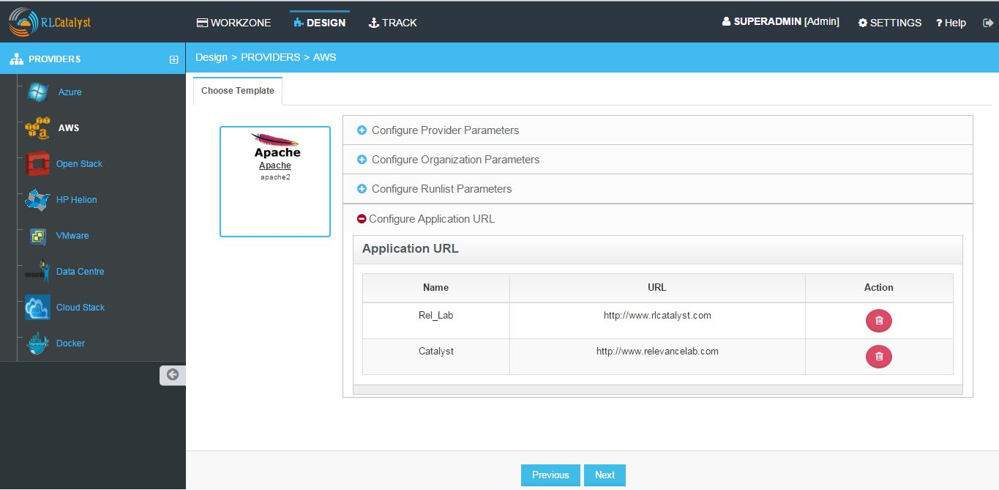
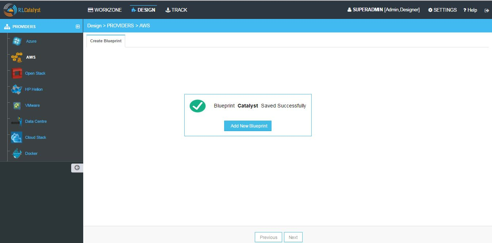

Design¶
RL Catalyst Design options allows you to create Blueprints by using predefine templates.
Creating BluePrints for Sofware Stack Template Type
Blueprints are predefined templates which can be used by service consumers to launch the instances. Blueprints are designed by service designers. Each blueprint stores the metadata of the instance, variables, actions and activity. Follow the steps for creating BluePrints.
- From the Design page choose a Software Stack Template Type and click Next

- From the Template cards choose template and click Next

- Once you choose the Template, Enter the details for creating the BluePrint
- In the Configure Providers Parameters option, choose the operating system from Choose Operating System drop down list
- Choose the provider from the Choose Provider drop down list
- Choose the image that you want to use from the Choose Available Images drop down list
- Choose the region from the Choose Region drop down list
- Choose the VPC from the Select VPC drop down list
- Choose the subnet from the Select Subnet drop down list
- Choose the key pair from the Select Key Pair drop down list
- Choose the instance size from the Select Instant Size drop down list
- Choose the security group from the Choose Security Group drop down list

- In the Configure Organization Paramteres option, Choose the Organization, Enter blueprint name, Choose Business group and Project names
- In the Configure Runlist Parameter option, Click on + icon (Edit Runlist), select the Cookbooks from the left frame and Click the arrow button to add to the Runlist. You can deselect the selected Cookbooks from the Order Runlist by clicking the arrow button to the Select Runlist box again
- You can customize the order of Order Runlist. First select the item and then use the up arrow and down arrow provided to change the order of the Order Runlist
- Click on Update runlist button


- In the Configure Application URL option, you can view the application URL available for the BluePrint
- If you want to add a new URL, click on the New button
- Add Application window will pop up
- Provide the application name in the Name box and the host URL in the URL box
- Click Add button, to the add the Application URL
- Click on Next button
- Now blueprint is created for Software Stack Template type

Creating BluePrints for Docker Template Type
- From the Design page choose a Docker Template Type and click Next

- Choose the available Template and click Next

- Choose your Organization name form Choose Organization dropdown
- Provide name in Enter Blueprint Name textfield
- Choose your business group from Choose Business Group dropdown
- Choose your project from Choose Project dropdown

Click on Launch Parameters icon
- Enter Container Name
- Enter Port mappings
- Enter Volumes
- Enter Volumes-from
- Enter Linked Container name
- Enter Environment variables
- Enter Start up Command
h. Enter Additional StartUp command I. Click on Add button


- Click Next button
- Click OK in confirmation popup
- Now Docker blueprint saved successfully
Creating BluePrints for Cloud Formation Template Type
- From the Design page choose a Cloud Formation Template Type and click Next

- Choose the available Template and click Next

- Click on Configure Organization Parameters
- Choose your Organization name form Choose Organization dropdown
- Provide name in Enter Blueprint Name textfield
- Choose your business group from Choose Business Group dropdown
- Choose your project from Choose Project dropdown

- Click on Configure Stack Parameters
- Choose the region from the Choose Region drop down list
- Choose the provider from the Choose Provider drop down list
- Choose the Keyname from the Choose Keyname drop down list
- Choose the Subnet from the Choose Subnet down list.
- Choose the Security Group from the Choose Security Group list
- Choose the AMImageID from the Choose AMImageID list
- Choose the Instance Type from the Choose Instance Type list
- Click on Next button
- Now blueprint is created for Cloud Formation Template